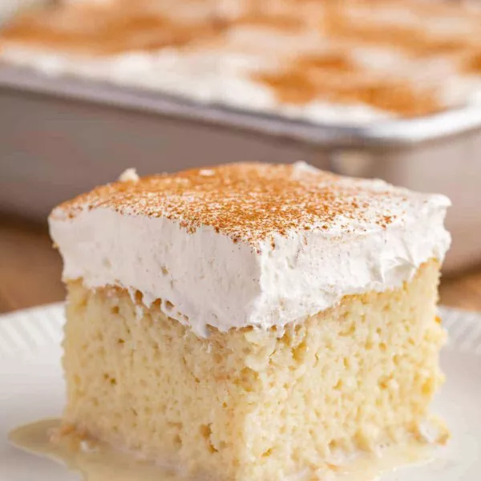

Tres Leches Cake

description
The classic tres leches sponge cake features three types of milk: whole milk,
condensed milk, and evaporated milk; it's topped with a light and sweet whipped cream.
Though this cake is soaked in milk, it's known for it's light, fluffy, and airy texture.
Before making this cake, make sure that you have all the needed ingredients ready and on
standby for use. In total time it should take about 1 hour to make this recipe.
ingredients
- 1 1/2 cups all-purpose flour
- 1 teaspoon baking powder
- 1/2 cup unsalted butter
- 1 cup white sugar
- 5 eggs
- 1/2 teaspoon vanilla extract
- 2 cups whole milk
- 1 (14 ounce) can sweetened condensed milk
- 1 (12 fluid ounce) can evaporated milk
- 1 1/2 cups heavy whipping cream
- 1 cup white sugar
- 1 teaspoon vanilla extract
steps
-
Preheat oven to 350 degrees (175 degrees C).
Grease and flour 9x13 inch baking pan (or pan of similar size).
-
Sift flour and baking powder together, then set aside.
-
Beat sugar and butter together in a large bowl until the mixture light and fluffy.
Add eggs and vanilla, and beat mixture.
Add flour mixture in, about 1/2 cup at a time, until mixture is well blended.
Pour the batter into the baking pan.
-
Bake in the preheated oven for about 30 minutes.
Pierce all over the cake with a fork; let it cool to room temperature.
-
Mix whole milk, condensed milk, and evaporated milk together in a bowl,
then pour over the top of the cake and allow it to soak in.
-
Whip the cream, the remaining 1 cup of sugar, and 1 teaspoon of vanilla in a bowl,
until thick.
Spread over the top of the cake and keep cake refrigerated until serving.